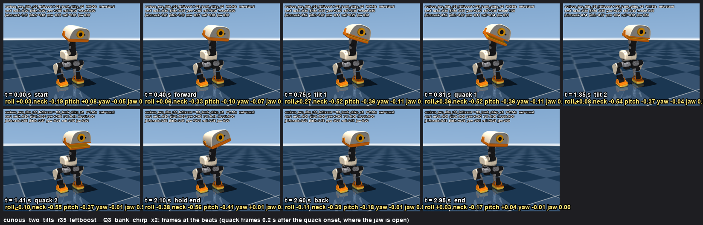
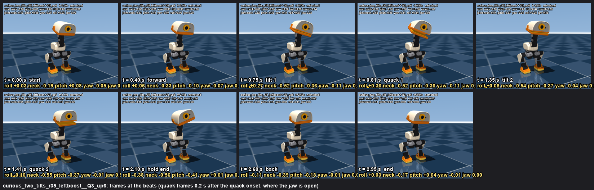

Standing (stand net at rest, no sit, body pose 0). Head deltas: neck -0.8 and head_pitch -0.35 bring the head forward with the beak level;
head_roll +-0.27 is the tilt (the joint's full range); the mouth follows the wav's loudness with a 0.15 s delay. Three-quarter front camera. Simulation, 640x480, 30 fps.
Motions and json: /Users/remi/microduck/notes/emotions/motion/curious/ (spec: spec_v3.json, renderer: curious.py).
motion: right tilt 0.35, left tilt asks the full range (-0.44) because the left side tracks weaker
beats: forward 0.0-0.4 s · tilt 0.4-0.75 s to +0.35, 1.0-1.35 s to -0.44 · quacks at 0.6, 1.2 s · hold to 2.1 · back 2.1-2.6 s · 3.0 s
sound: two of the bank's rising chirp blips (Rémi's pick)
measured: no fall · roll joint at the tilt(s) [0.425, -0.353] rad (max 24.4 deg, range +-0.27) · neck -0.56, head_pitch -0.41, yaw -0.11 rad · beak forward 1.6 cm (dz 0.8 cm) · jaw at the quacks [0.91, 0.96], between them 0.0
beats sheet · keyframes json (with mouth) · silent mp4

right tilt 0.35, left tilt asks the full range (-0.44) because the left side tracks weaker
motion: right tilt 0.35, left tilt asks the full range (-0.44) because the left side tracks weaker
beats: forward 0.0-0.4 s · tilt 0.4-0.75 s to +0.35, 1.0-1.35 s to -0.44 · quacks at 0.6, 1.2 s · hold to 2.1 · back 2.1-2.6 s · 3.0 s
sound: the chirp pair with the second chirp 2 semitones higher (a question lift)
measured: no fall · roll joint at the tilt(s) [0.425, -0.353] rad (max 24.4 deg, range +-0.27) · neck -0.56, head_pitch -0.41, yaw -0.11 rad · beak forward 1.6 cm (dz 0.8 cm) · jaw at the quacks [0.91, 0.94], between them 0.0
motion: right tilt 0.35, left tilt asks the full range (-0.44) because the left side tracks weaker
beats: forward 0.0-0.4 s · tilt 0.4-0.75 s to +0.35, 1.0-1.35 s to -0.44 · quacks at 0.6, 1.2 s · hold to 2.1 · back 2.1-2.6 s · 3.0 s
sound: the chirp pair with the second chirp 4 semitones higher (a question lift)
measured: no fall · roll joint at the tilt(s) [0.425, -0.353] rad (max 24.4 deg, range +-0.27) · neck -0.56, head_pitch -0.41, yaw -0.11 rad · beak forward 1.6 cm (dz 0.8 cm) · jaw at the quacks [0.91, 0.92], between them 0.0
motion: right tilt 0.35, left tilt asks the full range (-0.44) because the left side tracks weaker
beats: forward 0.0-0.4 s · tilt 0.4-0.75 s to +0.35, 1.0-1.35 s to -0.44 · quacks at 0.6, 1.2 s · hold to 2.1 · back 2.1-2.6 s · 3.0 s
sound: the chirp pair with the second chirp 6 semitones higher (a question lift)
measured: no fall · roll joint at the tilt(s) [0.425, -0.353] rad (max 24.4 deg, range +-0.27) · neck -0.56, head_pitch -0.41, yaw -0.11 rad · beak forward 1.6 cm (dz 0.8 cm) · jaw at the quacks [0.91, 0.92], between them 0.0
beats sheet · keyframes json (with mouth) · silent mp4

{kind=link}
{kind=link}
{kind=link}
{kind=link}